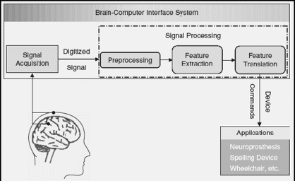

BNCI Evaluation Suite
In the following Documentation pages we report on the different modules implemented for the BNCI Evaluation Suite. This toolbox aims at the implementation of several functionalities around the Enobio sensor for the realization of BCI functionalities. The idea if the toolkit is to provide some functionalities in Matlab that can be combined for prototyping and evaluating BCI solutions. These can be implemented within the toolkit or together with further BCI prototyping MATLAB toolkits like BCILAB.
BCI systems attain to translate brain signals, which can include several physiological modalities, into control commands of a particular device, e.g. wheelchair, computer, mobile phone, robot arm. A generic block diagram of such systems can be observed in Figure 1. Taking such a structure as a reference, if a system makes use of a classification procedure as feature translator, the resulting system can be analysed from a pattern recognition perspective. This is the approach we follow in the BNCI Evaluation Suite. Therefore you can find functionalities for feature extraction and for classification in multi-class problems.

Figure 1. Block diagram of a generic BCI system based on a pattern recognition approach. Reproduced from [Kachenoura et al. 2008] with permission.
Different paradigms for the realization of BCI exist. Among them the more common used ones are so-called motor imagery, P300, and SSEVP. The implementation works described herein are focused on the motor imagery, where control commands are generated upon the classification of the corresponding EEG signal streams into diverse classes, and p300 paradigms, where control signals are generated after a particular Event Related Potential (ERP) placed at 300 ms after setting of stimuli.
In the here described works we have decided to use two different frameworks respectively for motor imagery and P300 data classification. The work by Gao Xiaorong and colleagues presented at the BCI Competition III and described here, has been implemented for the motor imagery paradigm. Some variations of the original work as described in [Cester and Soria, 2011] have been implemented.
As for the P300 code we provide the code presented in [Rakotomamonjy and Guige, 2008]. We offer the code as provided by the authors, together with a refinement we have undertaken in order to refine the function interfaces. Our version of the code is the current version of a work in progress.
Summary and structure of toolkit:
featureExtraction: Directory including different feature extraction methodologies
multiclass: Directory including different classification, data fusion, and performance evaluation methodologies
motorImageryDemos: Demo scripts use din the implementation of the motor imagery framework mentioned above
p300: P300 framework as provided by Rakotomamonjy
p300toolkit: Reproduction of the Rakotomamonjy framework as implemented in this toolkit
A developer manual with more background information in PDF format can be found here.